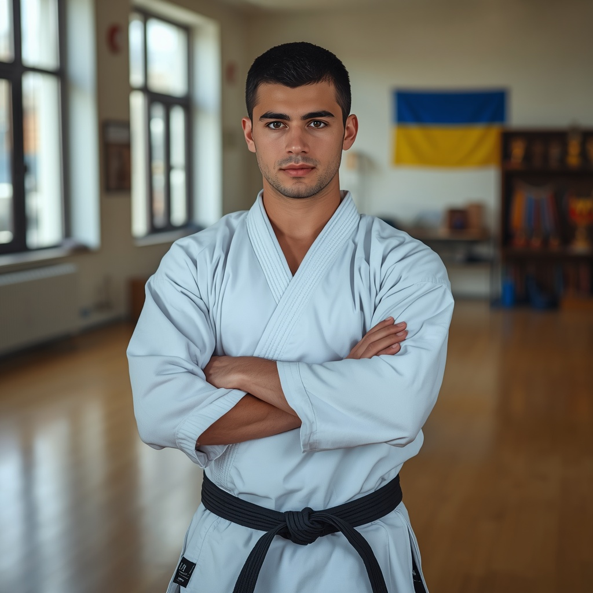
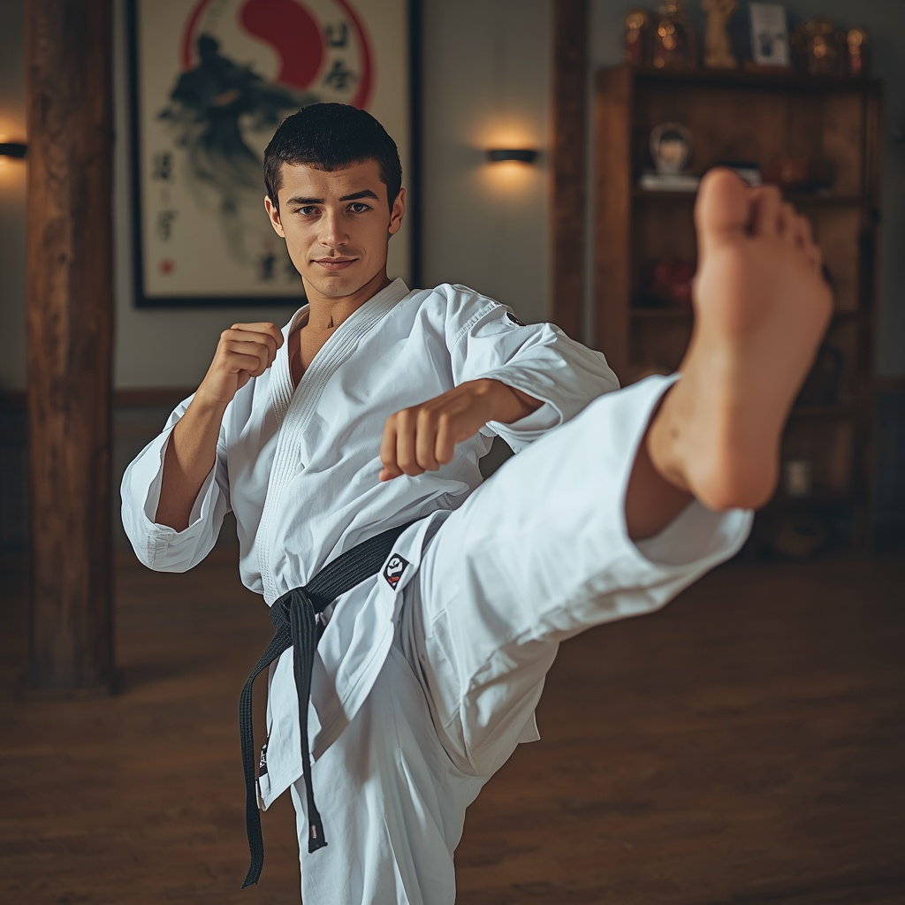
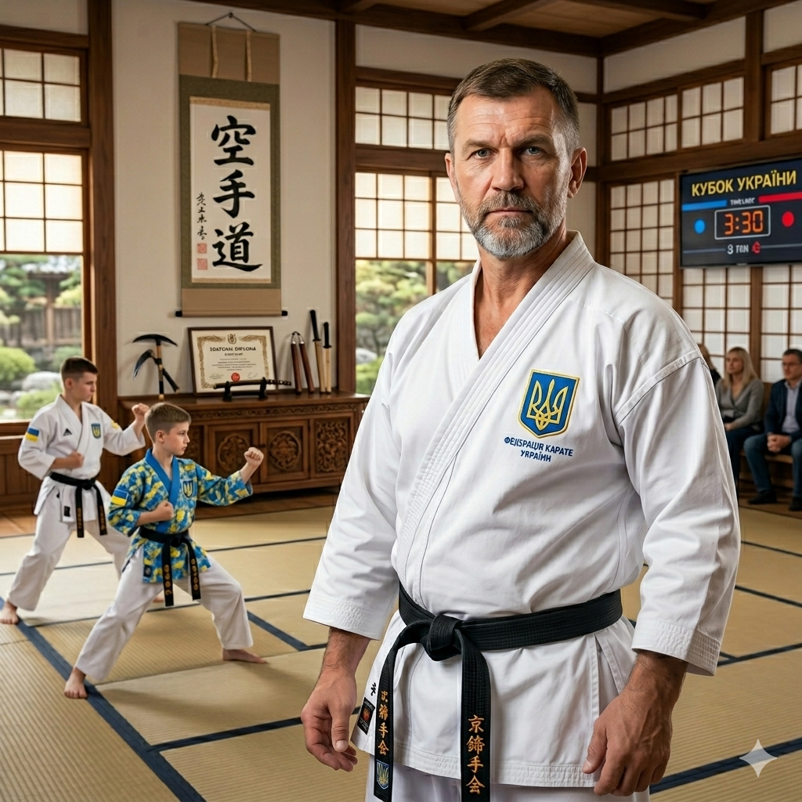
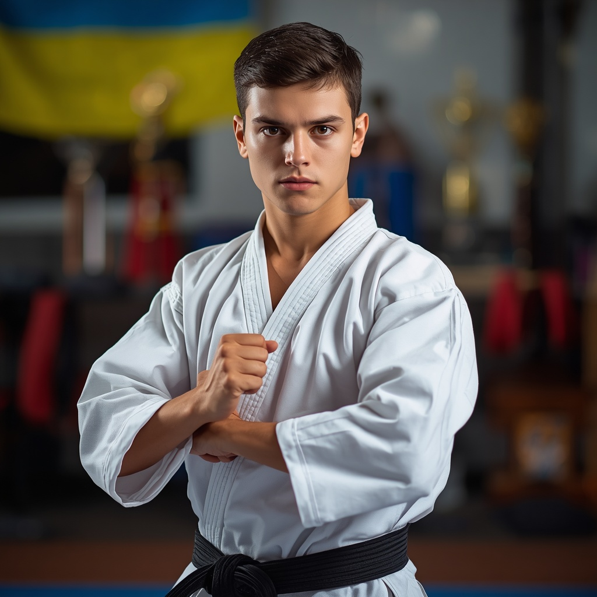
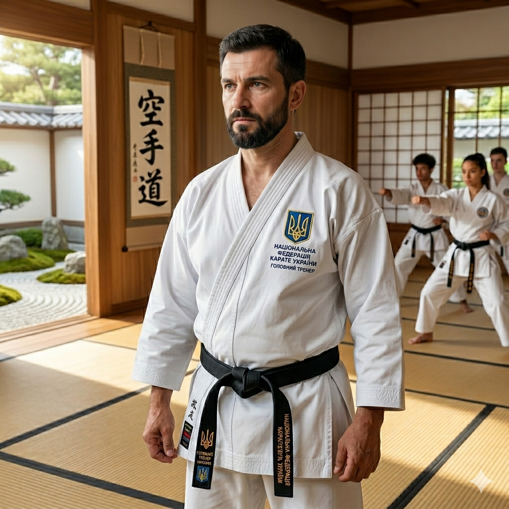
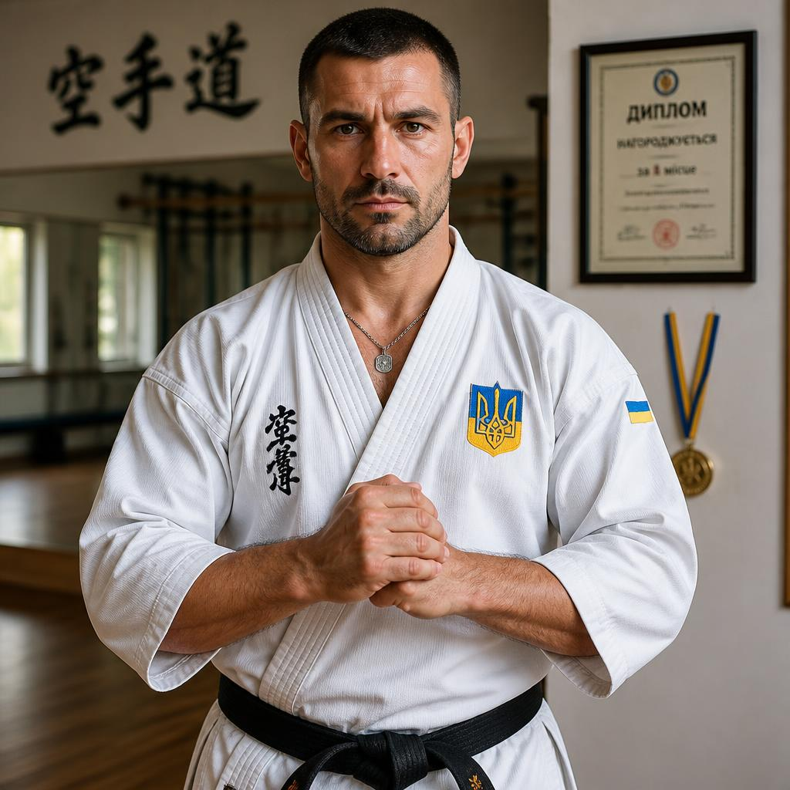
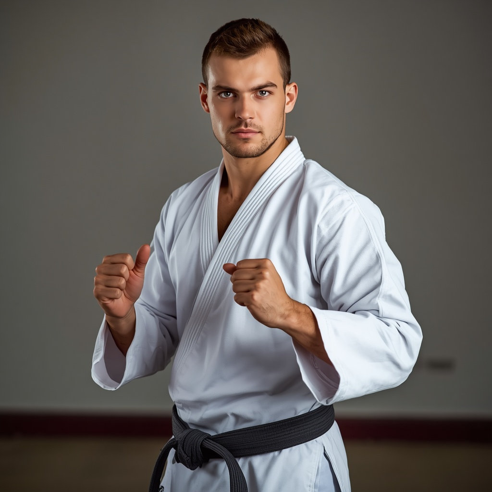

Карате — знамените японське бойове мистецтво, яким займаються понад 100 мільйонів людей. Сучасні спортивні правила (WKF) сформувалися в Японії у XX столітті. Поєдинки проходять на татамі розміром 8 на 8 метрів. Найпрестижніші турніри: Олімпійські ігри, Чемпіонат світу та Прем'єр-ліга. Найкращі майстри в історії — Фунакосі, Агаєв, Кіуті. Матч обслуговує рефері та чотири бокові судді, діє система відеоповторів. Карате розвиває швидкість, точність, гнучкість і самоконтроль.


Правила Поєдинок триває 3 хвилини чистого часу. Змагаються 2 спортсмени, заміни заборонені. Мета — набрати більше точних балів або отримати перевагу у 8 очок. Удари в повний контакт заборонені, діє контроль сили. За точні удари руками й ногами або кидки дають від 1 до 3 балів. Порушення (вихід за татамі, сильний контакт) — попередження або дискваліфікація. При рівному рахунку переможця обирають судді голосуванням.

Максим Назаренко — Карате. Досвід: 8 років. Спеціалізація: ката (демонстрація техніки), ідеальна форма, баланс. Досягнення: майстер спорту, триразовий чемпіон України з ката. Про себе: «Поставлю відточену до ідеалу техніку, навчу залізної концентрації та балансу тіла».

Ігор Гриценко — Карате. Досвід: 16 років. Спеціалізація: підготовка до чорного пояса, тактика поєдинку, психологія. Досягнення: засновник обласної федерації карате, підготував понад 10 майстрів спорту. Про себе: «Виховую чемпіонів з міцним духом, які вміють перемагати під будь-яким тиском».

Руслан Левицький — Карате. Досвід: 5 років. Спеціалізація: куміте (поєдинки), вибухова швидкість, контратаки. Досягнення: чорний пояс 4-й дан, виховав чемпіона Європи за версією WKF. Про себе: «Вчу блискавично атакувати, випереджати суперника на долі секунди та тримати дистанцію».

Артем Ткачук — Карате. Досвід: 8 років. Спеціалізація: робота ніг, високі удари (Маваші, Ура-Маваші), гнучкість. Досягнення: сертифікований тренер WKF, екс-боєць національної збірної. Про себе: «Розтягну твої ноги на максимум, навчу бити точно в голову під будь-яким кутом».

Денис Савчук — Карате. Досвід: 4 роки. Спеціалізація: базові блоки, координація, робота з наймолодшими. Досягнення: срібний призер студентських ігор, дипломований дитячий тренер. Про себе: «Поясню філософію карате, навчу правильної бази з нуля та захисних блоків».»

Ярослав Бойко — Карате. Досвід: 9 років. Спеціалізація: функціональна підготовка, витривалість, швидкість реакції. Досягнення: чорний пояс 2-й дан, розробив авторську кардіо-програму для бійців. Про себе: «Прокачаю твою дику витривалість, щоб ти легко тримав максимальний темп на татамі».

Роман Мельник — Карате. Досвід: 11 років. Спеціалізація: підсічки (Аші-Бараї), кидкова техніка, тактичний аналіз. Досягнення: диплом академії спорту, вивів юнацький клуб у топ-5 країни. Про себе: «Вчу ловити суперника на помилках, проводити чіткі підсічки та заробляти максимальні 3 бали».

Микита Гордієнко — Карате. Досвід: 2 роки. Спеціалізація: юнацьке куміте, швидкість реакції, загальна фізична підготовка. Досягнення: чорний пояс 1-й дан, призер чемпіонату України серед юніорів. Про себе: «Допоможу підібрати перше екіпірування, навчу базової стійки та розжену твою реакцію на максимум».